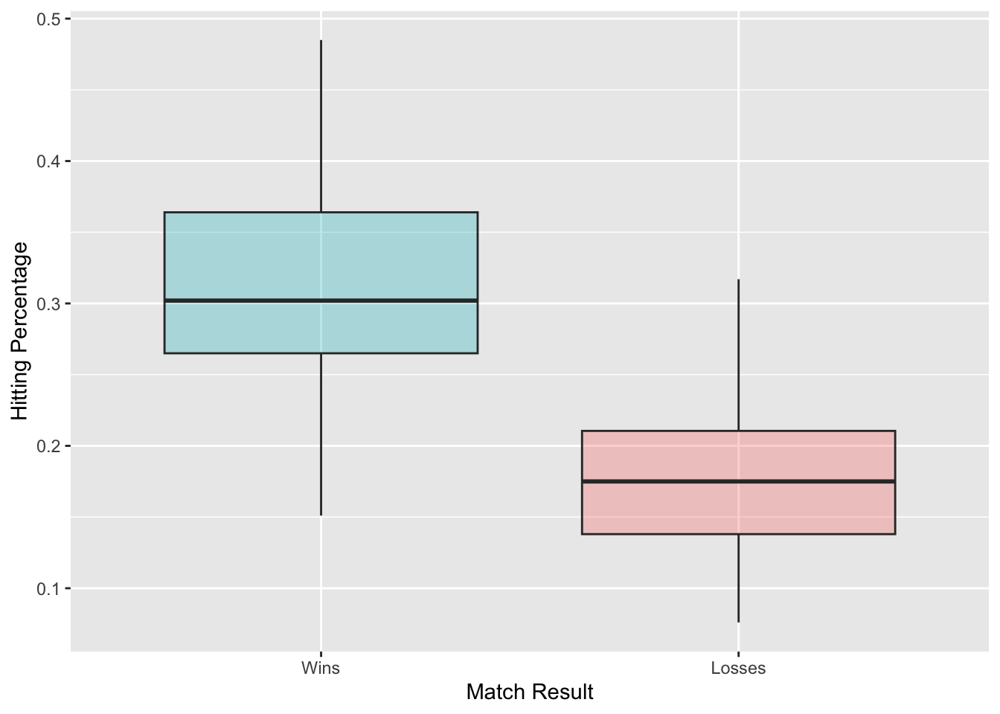
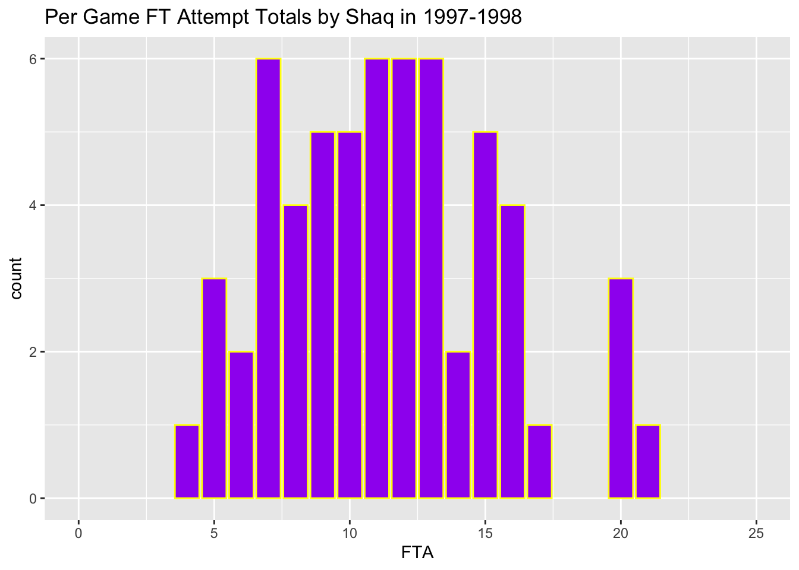
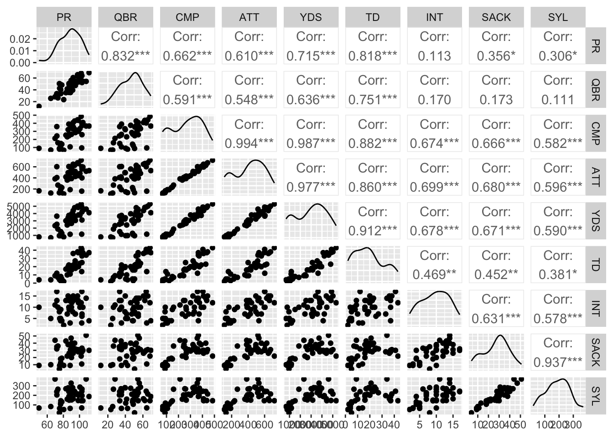

Chapter 3 Probability
3.1 Definitions
Definition 3.1 An experiment is any activity or process whose outcome is subject to uncertainty.
Definition 3.2 The sample space of an experiment, denoted by \(\Omega\) or \(\mathcal{S}\), is the set of all possible outcomes of that experiment.
Definition 3.3 An event is any collection (subset) of outcomes contained in the sample space, \(\Omega\).
Example 3.1 Give some examples of discrete random variables in sports.
Example 3.2 Give some examples of continuous random variables in sports.
3.2 Set Theory
For the following examples, suppose that we are interested in the batting outcomes of a plate appearance in baseball.
Let \(A\) be the event that the batter gets walked, let \(B\) be the event that the batter gets a hit, let \(C\) be the event that the batter strikes out, and let \(D\) be the event that the batter makes it to first base at the end of their at bat.
We will define a handful of set operations to help us when we begin calculating the probability of different events occurring.
Definition 3.4 The compliment of an event \(A\), denoted by \(A^c\) or \(A'\), is the set of all outcomes in \(\Omega\) that are not contained in \(A\).
Example 3.3 Draw a Venn diagram illustrating \(A^c\) and describe the event.
Definition 3.5 The union of two events \(A\) and \(B\), denoted by \(A \cup B\) and read “\(A\) or \(B\)”, is the event consisting of all outcomes that are either in \(A\) or \(B\) or in both.
Example 3.4 Draw a Venn diagram illustrating \(A \cup D\) and describe the event.
Definition 3.6 The intersection of two events \(A\) and \(B\), denoted by \(A \cap B\) and read “\(A\) and \(B\)”, is the event consisting of all outcomes that are in both \(A\) and \(B\).
Example 3.5 Draw a Venn diagram illustrating \(A \cap D\) and describe the event.
Definition 3.7 The difference of two events \(A\) and \(B\), denoted by \(A \mathbin{/} B\) and read “difference of \(A\) and \(B\)”, is the event consisting of all outcomes that are in \(A\) but not in \(B\).
Example 3.6 Draw a Venn diagram illustrating \(D \mathbin{/} A\) and describe the event.
Definition 3.8 Two events \(A\) and \(B\) are said to be disjoint (or mutually exclusive) if \(A \cap B = \emptyset\)
Example 3.7 Are the events \(A\) and \(B\) disjoint? How about \(A\) and \(D\)?
3.3 Axioms, Properties, and Laws
There are some basic assumptions or “axioms” which are the foundation of the theory of probability. Andrey Kolmogorov first described these axioms in 1933.
3.3.1 Axioms of Probability
- \(P(A) \geq 0\), for any event \(A\)
- \(P(\Omega) = 1\)
- If \(A_1, A_2, A_3, \ldots\) is a collection of disjoint events, then:
\(P(\cup_{i=1}^{\infty} A_i) = P(A_1 \cup A_2 \cup \ldots ) = \sum_{i=1}^{\infty} P(A_i)\)
Note that all probabilities are between 0 and 1, that is, for any event \(A\), \(0 \leq P(A) \leq 1\).
We can convert to percentages by multiplying probabilities by 100, however, this is a set that is only done after all calculations have been completed.
3.3.2 Properties of Probability
\(P(\emptyset) = 0\)
\(P(A^c) = 1 - P(A)\)
\(P(A \cup B) = P(A) + P(B) - P(A \cap B)\)
\(P(A \cup B \cup C) = \\ P(A) + P(B) + P(C) - P(A \cap B) - P(A \cap C) - P(B \cap C) + P(A \cap B \cap C)\)
\(P([A \cup B]^c) = P(A^c \cap B^c)\)
\(P([A \cap B]^c) = P(A^c \cup B^c)\)
Example 3.8 In 2001, Barry Bonds broke the single season home run record with 73 home runs. In this season, he had 664 plate appearances (476 at-bats), 156 hits, 177 walks, 9 hit by pitches, and 2 sacrifice flies. Use this information to answer the following questions.
Plate appearances that result in a walk, hit by pitch, or sacrifice fly are not counted towards a player’s at-bats. Confirm that Bonds had 476 official at-bats.
Suppose an at-bat is chosen at random. What is the probability that Bonds got a hit? (This is his batting average.)
For the following examples, assume that one of Bonds’ plate appearances is chosen at random.
What is the probability that Bonds reached base via a hit, walk, or hit by pitch? (This is his on-base average/percentage.)
What is the probability that Bonds did not reach base?
Calculate \(P\left(HBP \cup Walk\right)\)
Calculate \(P\left(HBP^c \cap Walk^c\right)\)
3.3.3 Laws of Probability
Definition 3.9 Let \(A\) and \(B\) be two events such that \(P(B)>0\). Then the conditional probability of \(A\) given \(B\), written \(P(A|B)\), is given by: \(P(A|B) = \frac{P(A \cap B)}{P(B)}\)
Example 3.9 In 1998, Sammy Sosa hit 66 home runs in 722 plate appearances, the third highest single season homework total ever. During June 1998, Sosa 20 home runs in 121 plate appearances. Suppose a randomly selected plate appearance is selected. Calculate the following probabilities.
- \(P(HR)\)
- \(P(HR \cap June)\)
- \(P(June)\)
- \(P(HR|June)\)
- \(P(June|HR)\)
- \(P(HR|June^c)\)
Theorem 3.1 (Multiplication Rule) For any two events \(A\) and \(B\), \(P(A \cap B) = P(B|A) \cdot P(A)\).
Example 3.10 Calculate the probability that a randomly selected plate appearance from Sosa’s 1998 season is a home run in June.
Definition 3.10 Events \(A_1, A_2, \ldots, A_n\) are said to form a partition of a sample space \(\Omega\) if both:
(i) \(A_i \cap A_j = \emptyset\) (\(i \neq j\))
(ii) \(\cup_{i=1}^n A_i = \Omega\)
Theorem 3.2 (Law of Total Probability) Suppose events \(A_1, A_2, \ldots, A_n\) form a partition of \(\Omega\), then: \(P(B) = P(B|A_1)P(A_1) + P(B|A_2)P(A_2) + \ldots P(B|A_n)P(A_n)\)
Example 3.11 What is one possible way to partition Sosa’s plate appearances in 1998?
Theorem 3.3 (Bayes Theorem: simple version) Suppose events \(B\) and \(C\) form a partition of \(\Omega\), then: \(P(B|A) = \frac{P(B \cap A)}{P(A)} = \frac{P(A|B)P(B)}{P(A|B)P(B)+P(A|C)P(C)}\)
Theorem 3.4 (Bayes Theorem) Suppose events \(B_1, B_2, \ldots, B_n\) form a partition of \(\Omega\), then: \(P(B_k|A) = \frac{P(B_k \cap A)}{P(A)} = \frac{P(A|B_k)P(B_k)}{P(A|B_1)P(B_1)+P(A|B_2)P(B_2) + \ldots + P(A|B_n)P(B_n)}\)
Example 3.12 Given that Sosa hit a home run in 1998, what is the probability that he hit it in June?
Example 3.13 Over the course of a season, a hockey player scored a goal 30% of the time during a home game, and 18%. Assume all games are either home or away. Use this information to answer the following questions.
- What is the probability the player scored a goal in any game if there were an equal number of home and away games?
- What is the probability the player scored a goal in any game if there were twice as many home games as away games?
- What is the probability the player scored a goal in any game if the ratio of home games to away games is 2:3?
3.4 Combinatorics
Combinatorics is the mathematical study of counting, particularly with respect to permutations and combinations.
Definition 3.11 The factorial function (\(n!\)) is defined for all positive integers by: \(n! = n \cdot (n-1) \cdot \ldots 2 \cdot 1\)
Note that \(0! \equiv 1\) and \(1! \equiv 1\).
Example 3.14 A baseball/softball batting lineup has nine ordered players. Suppose the manager has selected the nine players to bat. How many different batting orders are there possible?
Definition 3.12 An ordered subset is called a permutation. The number of permutations of size \(k\) that can be formed from the \(n\) elements in a set is given by: \(P_{n,k} = \frac{n!}{(n-k)!}\)
Example 3.15 In MLB, each team has a 26-person roster, of which about 13 are hitters. Assuming one of the batters is the designated hitter, how many different batting lineups of 9 players can a manager create?
Definition 3.13 An unordered subset is called a combination. The number of combinations of size \(k\) that can be formed from the \(n\) elements in a set is given by: \(C_{n,k} = {n \choose k} = \frac{n!}{k! \cdot (n-k)!}\)
Example 3.16 Suppose a manager has 13 hitters to choose from to fill out a starting lineup of 9 players. Ignoring positions, how many different ways can the manager pick a 9-person lineup from 13 possible hitters?
Theorem 3.5 (Product Rule for Ordered Pairs) If the first element of an ordered pair can be selected in \(n_1\) ways and for each of the these \(n_1\) ways the second element of the pair can be selected in \(n_2\) ways, then the number of pairs is \(n_1 \cdot n_2\).
Theorem 3.6 (Generalized Product Rule) Suppose a set consists of \(k\) elements (k-tuples) and that there are \(n_1\) possible choices for the first element, \(n_2\) possible choices for the second element, … , and \(n_k\) possible choices for the \(k^\text{th}\) element, then there are \(n_1 \cdot n_2 \cdot \ldots \cdot n_k\) possible k-tuples.
Example 3.17 A baseball manager selects nine hitters and one pitcher for a starting lineup. Suppose they can choose from 13 hitters and 13 hitters. How many different possible lineups can the manager choose from?
3.5 Odds and Gambling
3.5.1 Sports Betting in USA
In 2018, the United States Supreme Court overturned a 1992 federal law that banned commercial sports betting in most states. For more about this ruling, see this New York Times article: https://www.nytimes.com/2018/05/14/us/politics/supreme-court-sports-betting-new-jersey.html
In Colorado, you must be at least 21 years old to gamble including betting on sports games.
3.5.2 Gambling Addiction
Gambling addiction, compulsive gambling, or gambling disorder is a serious impulse-control disorder. Here is a link to the Mayo Clinic’s discussion of compulsive gambling: https://www.mayoclinic.org/diseases-conditions/compulsive-gambling/symptoms-causes/syc-20355178
Gambling is not encouraged and can lead to numerous problems. If you choose to gamble on sports, don’t bet beyond your means and seek help if you worry that you may be suffering from gambling addiction.
3.5.3 Odds Definition
In this chapter so far, we have quantified uncertainty using probabilities (numbers between 0 and 1) and percentages (numbers between 0 and 100). We can also quantify uncertainty using odds.
Definition 3.14 The odds (in favor) of an outcome \(A\) is the probability of \(A\) divided by the probability of \(A^C\).
\[Odds = \frac{p}{1-p}\]
Note: We may also be given the odds against a particular outcome. In this case, we have \(Odds Against = \frac{1-p}{p}\).
Some Common Odds:
| Odds | p | q | Odds | p | q |
|---|---|---|---|---|---|
| 0:1 | 0.000 | 1.000 | 1:0 | 1.000 | 0.000 |
| 1:1 | 0.500 | 0.500 | 1:1 | 0.500 | 0.500 |
| 2:1 | 0.667 | 0.333 | 1:2 | 0.333 | 0.667 |
| 3:1 | 0.750 | 0.250 | 1:3 | 0.250 | 0.750 |
| 4:1 | 0.800 | 0.200 | 1:4 | 0.200 | 0.800 |
| 5:1 | 0.833 | 0.167 | 1:5 | 0.167 | 0.833 |
| 10:1 | 0.909 | 0.091 | 1:10 | 0.091 | 0.909 |
| 100:1 | 0.990 | 0.010 | 1:100 | 0.010 | 0.990 |
In the following table, the odds of an outcome along with the probability of the outcome, p, and the probability of the outcome’s complement, q=1-p are given.
Example 3.18 For the following examples, convert between probability and odds.
- Suppose that the probability that the Cubs win the 2025 World Series is 0.03. What are the odds in favor?
- Suppose that the odds that the Rockies win the World Series in 2025 is 100:1. What is the probability in favor?
- Suppose there is a 1% chance that CSU wins a national championship in any sport in the next decade. What are the probability and the odds against CSU winning a national championship in the next decade?
Example 3.19 Suppose that there are three finalists in an Olympic competition. It is estimated that Athlete A has a 50% chance of winning, Athlete B has a 40% chance of winning, and Player C has a 10% chance of winning. Calculate the odds against each of the athletes winning the competition.
3.5.4 Gambling Odds
Here’s a helpful resource on calculating gambling odds:
https://www.actionnetwork.com/education/decimal-odds
Gambling odds are a bit different that odds in a probability context. Gambling odds tell the amount that the bookmaker will pay out for a winning bet. For example, if a bookmaker is offering “10:1” that the Rockies win the next World Series, the bookmaker will pay out 10x the original wager plus the original wager if the Rockies win the World Series and the bookmaker will keep the original bet if the Rockies fail to win the World Series.
Definition 3.15 The implied probability, \(\tilde{p}\), of a wager is the probability that corresponds to the odds of the wager.
\[\tilde{p} = \frac{Odds}{Odds+1}\]
Definition 3.16 Fractional odds are common in horse racing and quote the net total that will be paid out to the bettor, should he or she win, relative to the stake. The numerator and denominator of fractional odds are always positive integers. For example, a $100 wager on a “5:1” bet would result in a payout of \(5 \cdot \$100 + \$100 = \$600\) if the wager is correct and a payout of $0 if the wager is incorrect.
Definition 3.17 Decimal Odds represent the multiplier of a winning bet and is calculated by taking the inverse of the implied probability. For instance, if you bet $100 with decimal odds of 1.8, your payout is $180 ($100 wager + $80 winnings).
\[Decimal \, Odds = [\tilde{p}]^{-1}\]
Definition 3.18 A moneyline bet are common bets in American sports. When the moneyline is positive, the figure tells what the winning payout would be on a $100 bet. When the moneyline is negative, the figure tells what wager is required for a winning payout of $100.
Example 3.20 For the following scenarios, assume a wager of $100. Calculate the payout for a winning bet.
- Fractional odds of 4/1
- Moneyline +400
- Moneyline -300
- Decimal Odds of 1.5
Definition 3.19 A moneyline wager refers to the odds of a straight-up outcome on a game without consideration of a point spread. Typically, favorites will have negative moneyline odds and underdogs will have a positive moneyline odds.
If ML is negative: \[\tilde{p} = \frac{-ML_{NEG}}{-ML_{NEG}+100}\]
If ML is positive: \[\tilde{p} = \frac{100}{ML_{POS}+100}\]
Example 3.21 Calculate the implied probabilities for the following examples.
Fractional odds of 4/1
Moneyline -125
Moneyline +125
Decimal Odds of 1.5
Example 3.22 Suppose that for an upcoming NFL game, a moneyline wager on the Broncos is -105 and a moneyline wager on the Raiders is -120.
Calculate the implied probabilities of the two possible outcomes. (Note that sometime ties are an optional wager. Other times, ties will result in a push, that is, no winner.)
What is the sum of the implied probabilities?
Does the result from (b) violate the axioms of probability? If so, why?
Note: The goal of bookmaking is to make money, so there will be almost certainly be a house advantage. This means that the sum of the implied probabilities will be greater than 1.
Definition 3.20 The house advantage (or hold percentage) is the percentage of money that sportsbooks keep for every dollar earned.
\[House \, Advantage = 100 \cdot \sum_{i=1}^n \tilde{p}_i - 100\]
Example 3.23 Suppose that a bookmaker is offering a moneyline wager on the Broncos at -105 and a moneyline wager on the Raiders at -120. Calculate the bookmakers expected winnings based on the following amounts of total bets.
$500 wagered on the Broncos, $500 wagered on the Raiders
$250 wagered on the Broncos, $750 wagered on the Raiders
$750 wagered on the Broncos, $250 wagered on the Raiders
$0 wagered on the Broncos, $1000 wagered on the Raiders
$1000 wagered on the Broncos, $0 wagered on the Raiders
What is the house advantage?
Example 3.24 A point spread bet is a bet based on the projected margin of victory that can result in a win, loss, or push.
For example, if a sportsbook offers Rockies -1.5 against the Cubs and you bet on the Rockies, if the Rockies win by 2 or more runs, you win and if the Rockies win by 1 run or lose, then you lose.
Example 3.25 Suppose a sportsbook offers Broncos +14 against the Raiders at -110 (they also offer Raiders -14 at -110) and you have $20 to wager. Calculate the payout for the following scenarios.
You bet $20 on the Broncos and the final score is Broncos 21 Raiders 20. What is your payout?
You bet $20 on the Raiders and the final score is Broncos 21 Raiders 20. What is your payout?
You bet $10 on the Broncos and $10 on the Raiders and the final score is Broncos 21 Raiders 20. What is your payout?
Example 3.26 A parlay bet is a combination of multiple bets where the winnings from a winning bet are placed on other bets. All bets must be win for the parlay bet to pay out.
Example 3.27 Suppose that CSU is a three point favorite (-3) against CU in a women’s basketball game and the over/under on total number of points is 97. Assume that the price of bets is -110.
Suppose you place two bets, CSU -3 and Over 97, and the outcome of the game is CSU 60 CU 40. What is your payout?
Suppose you place a parlay bet on CSU -3 and Over 97 and the outcome of the game is CSU 60 CU 40. What is your payout?
Suppose you place two bets, CSU -3 and Over 97, and the outcome of the game is CSU 44 CU 40. What is your payout?
Suppose you place a parlay bet on CSU -3 and Over 97 and the outcome of the game is CSU 44 CU 40. What is your payout?
Reference:
https://www.wikihow.com/Calculate-Odds
3.6 Random Variables
Definition 3.21 Let \(\Omega\) be the sample space of an experiment. A random variable is a rule that associates a number with each outcome in \(\Omega\). In other words, a random variable is a function whose domain is \(\Omega\) and whose range is the set of real numbers.
Random variables are be broken down into subcategories:
1. Discrete random variables - random variables which have a sample space that is finite or countably infinite.
2. Continuous random variables - random variables which have a sample space that is uncountably infinite (such as an interval of real numbers)
Discrete and Continuous random variables use similar yet slightly different mathematical tools. Discrete random variables involve working with “sums” and continuous random variables involve working with “integrals”.
Example 3.28 Give an example of a discrete random variable in hockey.
Example 3.29 Give an example of a continuous random variable in hockey.
Definition 3.22 A probability distribution is a function that gives probabilities of different possible outcomes for a given experiment.
The probability distribution for a discrete random variable, \(p(x)\), is called a probability mass function (pmf).
The probability distribution for a continuous random variable, \(f(x)\), is called a probability density function (pdf).
Example 3.30 Suppose the Colorado Rockies are playing a four game series against the Chicago Cubs and that the Rockies have a 65% chance of winning an individual game. Further, assume that the games are independent. The following PMF describes the outcomes (number of Rockies wins) and their probabilities.
| Rockies wins, X | 0.000 | 1.000 | 2.000 | 3.000 | 4.000 |
| Probability, p(X) | 0.015 | 0.111 | 0.311 | 0.384 | 0.179 |
What is the probability that the Rockies win zero games? What is the probability that the Rockies win at least two games? Why might the independence assumption be false?
We may be interested in describing the center or average value of our random variable. We can do this with the following definitions.
Definition 3.23 The expected value (or population mean or average) of a random variable \(X\) is given by:
\(E[X] = \mu = \sum_{x \in \Omega} x \cdot p(x)\) (for discrete random variables)
\(E[X] = \mu = \int_{x \in \Omega} x \cdot f(x) dx\) (for continuous random variables)
For this class, evaluating integrals is not essential, so we will avoid using Calculus (integrals and derivatives) when possible.
Sometimes, it makes sense to calculate the expected value of a function of a random variable. This can be easily done with a slight modification to the previous definition. Let \(h(X)\) be some function of a random variable \(X\). The expected value of \(h(X)\), \(E[h(X)]\), is given by:
\(E[h(X)] = \sum_{x \in \Omega} h(x) \cdot p(x)\) (for discrete random variables)
\(E[h(X)] = \int_{x \in \Omega} h(x) \cdot f(x) dx\) (for continuous random variables)
Example 3.31 For the Rockies/Cubs four game series example, calculate \(E[X]\) and \(E[X^2]\).
The spread or variability associated with a random variable can be calculated using expected values as well.
Definition 3.24 The population variance of a random variable \(X\) is given by:
\(Var(X) = \sum_{x \in \Omega} (x-\mu)^2 \cdot p(x)\) (for discrete random variables)
\(Var(X) = \int_{x \in \Omega} (x-\mu)^2 \cdot f(x) dx\) (for continuous random variables)
There is also a shortcut formula for calculating variance:
Theorem 3.7 \(Var(X) = E[X^2] - (E[X])^2\)
Definition 3.25 The population standard deviation of a random variable \(X\) is given by:
\(SD(X) = \sigma = \sqrt{Var(X)} = \sqrt{E[X^2]-(E[X])^2}\)
Example 3.32 For the Rockies/Cubs four game series example, calculate \(Var(X)\).
Definition 3.26 A quantile-quantile plot (QQ plot) can be used to compare an empirical probability distribution against a theoretical distribution.
Example 3.33 Let’s generate two simulated datasets. The first dataset will follow a normal distribution with mean 10 and variance 4 and the second dataset will follow a Poisson distribution with rate 5. We’ll use QQ-plots to match each simulation with the correct distribution.
set.seed(2022)
sim1.df <- data.frame(x=rnorm(n = 1000,mean = 10,sd = 2))
sim2.df <- data.frame(x=rpois(n = 1000,lambda = 5))
jitter_width <- 0.2
fig1 <- ggplot(sim1.df, aes(sample = x)) +
stat_qq(position=position_jitter(width = jitter_width,height = jitter_width)) +
stat_qq_line() +
ggtitle("Sim 1 vs. Normal") +
xlab("Theoretical Quantiles") +
ylab("Empirical Quantiles")
fig2 <- ggplot(sim2.df, aes(sample = x)) +
stat_qq(position=position_jitter(width = jitter_width,height = jitter_width)) +
stat_qq_line() +
ggtitle("Sim 2 vs. Normal") +
xlab("Theoretical Quantiles") +
ylab("Empirical Quantiles")
fig3 <- ggplot(sim1.df, aes(sample = x)) +
stat_qq(distribution = qpois, dparams = 5,position=position_jitter(width = jitter_width,height = jitter_width)) +
stat_qq_line(distribution = qpois, dparams = 5) +
ggtitle("Sim 1 vs. Poisson") +
xlab("Theoretical Quantiles") +
ylab("Empirical Quantiles")
fig4 <- ggplot(sim2.df, aes(sample = x)) +
stat_qq(distribution = qpois, dparams = 5,position=position_jitter(width = jitter_width,height = jitter_width)) +
stat_qq_line(distribution = qpois, dparams = 5) +
ggtitle("Sim 2 vs. Poisson") +
xlab("Theoretical Quantiles") +
ylab("Empirical Quantiles")library(gridExtra)
grid.arrange(fig1,fig2,fig3,fig4,ncol=2)
What do you conclude from the four QQ plots?
3.7 Common Random Variables
There are several families of random variables that show up frequently in applications. Some of these random variables include: - Binomial - Geometric - Poisson - Normal
3.7.1 Binomial RVs
Definition 3.27 A binomial(n,p) random variable is a discrete random variable that counts the numbers of “successes” over a fixed number of trials, \(n\), with each trial having an equal probability of success, \(p\).
\(P(X=k) = \binom{n}{k} p^k(1-p)^{n-k} = \frac{n!}{k!\ \cdot\ (n-k)!} p^k(1-p)^{n-k}\), where \(0 \leq k \leq n, 0 \leq p \leq 1\)
If \(X \sim Binomial(n,p)\), then \(E[X]=np\) and \(Var(X)=np(1-p)\)
Example 3.34 The Cubs and Rockies are playing a 4-game series. The Rockies have a 0.65 probability of winning each game, and the Cubs have a 0.35 probability. Assume each game is independent. Solve for the following quantities.
The Cubs win exactly 1 game.
The Rockies win exactly 2 games.
The Cubs win at least 2 games.
The series ends in a sweep.
The expected number of wins for the Rockies.
The variance and standard deviations of wins for the Rockies.
Example 3.35 Complete 10,000 simulations of the four game series between the Rockies and Cubs. For the number of Rockies wins, calculate the sample mean and sample variance and compare these to the population values. Also, plot a histogram of the sample data.
set.seed(2022)
rockies_wins <- rbinom(n=10000,size=4,prob=0.65)
mean(rockies_wins)## [1] 2.6036var(rockies_wins)## [1] 0.9121583rockies_wins_df <- data.frame(Wins=rockies_wins)
rockies_wins_df %>% ggplot(aes(Wins)) + geom_histogram(binwidth = 1,color = "black", fill = "purple")
3.7.1.1 Binomial Coefficient Symmetry
Playoff series for a certain sports league are played as a best-of-seven series, with one team hosting four games and the opposing team hosing three. An executive for the league wishes to know the number of ways the home and away games can be assigned. (One such combination is A-A-B-B-A-B-A, the format used by the NBA and NHL for their best-of-seven series.) What is the total number of combinations?
However, instead of thinking about the number of ways to assign the games to the team that gets four home games, what if we thought about the number of ways to assign games to the team that gets three home games?
That would be \(\binom{7}{3}\). We can use the choose command in R to find this quantity.
choose(7,3)## [1] 35It turns out that this binomial coefficient is also equal to 35.
Theorem: \(\binom{n}{k} = \binom{n}{n-k}\)
\(\binom{n}{k} = \frac{n!}{k!\ \cdot\ (n-k)!}\)
\(\binom{n}{n-k} = \frac{n!}{(n-k)!\ \cdot\ (n-(n-k))!} = \frac{n!}{(n-k)!\ \cdot\ k!} = \binom{n}{k}\)
3.7.2 Geometric RVs
Definition 3.28 A Geometric(p) random variable is a discrete random variable that counts the numbers of trials until a “success” occurs, where the probability of success, \(p\), is constant across all trials.
\(P(X=k) = p(1-p)^{k-1}\), where \(k \geq 1, 0 \leq p \leq 1\)
If \(X \sim Geometric(p)\), then \(E[X]=\frac{1}{p}\) and \(Var(X)=\frac{p}{1-p}\)
Example 3.36 Suppose the number of shots needed by a hockey team in order to score their first goal, X, is modeled by a Geometric(\(\frac{1}{10}\)) random variable. Use this information to answer the following questions.
What is the probability that it takes exactly 3 shots to score the first goal?
What is the probability that it takes less than 3 shots to score the first goal?
What is the probability that it takes more than 3 shots to score the first goal?
Caution: Some references parameterize the Geometric distribution based on the number of failures before the first success, rather than the trial on which the first success occurs. This changes the PMF, mean, and variance, so be careful.
Let’s simulate the number of shot attempts required to score the first goal (Geometric(\(p=1/10\))) from the previous example.
set.seed(2020)
geometric <- rgeom(10000, 1/10)
head(geometric, 20)## [1] 2 2 7 55 6 11 2 11 2 5 0 50 17 2 7 0 7 19 17 1Some of the values were 0, which could not happen if R was considering the number of the trial on which the first success occurred. You can add 1 to the values given by R to arrive at the first success distribution.
first_success <- geometric + 1
head(first_success, 20)## [1] 3 3 8 56 7 12 3 12 3 6 1 51 18 3 8 1 8 20 18 2(mean_success <- mean(first_success))## [1] 10.0669The mean of this sample of variables is 10.0669, which is close to the expected mean of \(\frac{1}{p} = 10\).
Let’s plot the sample distribution of shots required to score a goal from the simulation as well.
first_success_df = data.frame(Shots = first_success)
first_success_df %>% ggplot(aes(x=Shots)) + geom_histogram(binwidth = 1)3.7.3 Poisson RVs
Definition 3.29 A Poisson(\(\lambda\)) random variable is a discrete random variable that counts the numbers of “successes” for a given rate parameter, \(\lambda\), for a given interval.
\(P(X=k) = \frac{e^{-\lambda}\lambda^k}{k!}\), where \(k \geq 0,\)
If \(X \sim Poisson(\lambda)\), then \(E[X]=\lambda\) and \(Var(X)=\lambda\)
Example 3.37 During the 2021 Major League Soccer season, the Colorado Rapids scored 51 goals in 34 games on their way to a first-place finish in the Western Conference regular season standings.
The team scored \(\frac{51}{34} = 1.5\) goals per game. Let’s model the distribution of Rapids goals using a Poisson(1.5) random variable that we’ll call Y.
- Which is more likely: Y taking on the value 0 or Y taking on the value 2?
We can calculate these probabilities in R using the dpois command.
dpois(x=0, lambda=1.5)## [1] 0.2231302dpois(x=2, lambda=1.5)## [1] 0.2510214We can also plot the PMF of Y to check visually.
x <- 0:8
y <- dpois(x, lambda = 1.5)
poisson.pmf <- data.frame(x,y)
ggplot(transform(poisson.pmf), aes(x, y)) +
geom_bar(stat="identity") +
ggtitle("Probability mass function of Poisson(1.5) random variable") +
xlab("Value") +
ylab("Probability")
Let’s check whether using a Poisson distribution was appropriate by comparing it to the actual 2021 Colorado Rapids match results.
# Data: https://www.espn.com/soccer/team/results/_/id/184/season/2021
library("kableExtra")
rapids21 <-
c(0,1,1,3,3,1,3,2,1,1,2,1,2,0,1,0,3,2,2,1,1,1,2,1,0,3,0,3,1,1,2,0,1,5)
goals <- c(0:4, "5+")
actual_frequency <- c(6, 14, 7, 6, 0, 1)
actual_proportion <- actual_frequency / sum(actual_frequency)
expected_proportion <- c(dpois(0:4, lambda=1.5),
ppois(4, lambda=1.5, lower.tail=FALSE))
expected_frequency <- round(expected_proportion * 34, 1)
rapids.data <- data.frame(goals, actual_frequency, actual_proportion,
expected_frequency, expected_proportion)
names(rapids.data) = c("Goals","Actual Frequency","Actual Proportion","Expected Frequency","Expected Proportion")
rapids.data %>% kt()| Goals | Actual Frequency | Actual Proportion | Expected Frequency | Expected Proportion |
|---|---|---|---|---|
| 0 | 6 | 0.176 | 7.6 | 0.223 |
| 1 | 14 | 0.412 | 11.4 | 0.335 |
| 2 | 7 | 0.206 | 8.5 | 0.251 |
| 3 | 6 | 0.176 | 4.3 | 0.126 |
| 4 | 0 | 0.000 | 1.6 | 0.047 |
| 5+ | 1 | 0.029 | 0.6 | 0.019 |
- What differences do you notice between the actual results and the expected values based on the Poisson random variable?
- Even if the true population distribution of 2021 Rapids goals was truly a Poisson(1.5) random variable, why might the actual distribution of their goals differ from the probability mass function?
- Use a QQ plot to compare the probability distribution of the 2021 Rapids goals to a Poisson distribution.
rapids21 %>%
as.data.frame %>%
ggplot(aes(sample = rapids21)) +
stat_qq(distribution = qpois,
dparams = 1.5,position=position_jitter(width = 0.1,height = 0.1)) +
stat_qq_line(distribution = qpois, dparams = 1.5) +
ggtitle("QQ-plot for Rapids 2021 Goals vs. Poisson Distribution") +
xlab("Theoretical Quantiles") +
ylab("Empirical Quantiles")- What are the advantages of using the Poisson distribution to model Major League soccer goals? What are the disadvantages?
Example 3.38 In 1997-1998 with the Los Angeles Lakers, Shaquille O’Neal attempted an average of 11.35 free throws per game with a standard deviation of 4.04. Is it appropriate to model Shaq’s per game free throw attempts as a Poisson(11.35) random variable?
- Plot the data.
shaq9798 <- read_csv("data/shaq9798.csv")
shaq9798 %>% ggplot(aes(x=FTA)) +
geom_bar(color = "yellow", fill = "purple") +
ggtitle("Per Game FT Attempt Totals by Shaq in 1997-1998") +
xlim(0,25)
- Plot the PMF of a Poisson(11.35) random variable.
x <- 0:25
y <- dpois(x, lambda = 11.35)
poisson.pmf <- data.frame(x,y)
ggplot(poisson.pmf, aes(x, y)) +
geom_bar(stat="identity") +
ggtitle("Probability mass function of Poisson(11.35) random variable") +
xlab("Value") +
ylab("Probability")- What similarities and what differences do you notice?
- Calculate the variance of the two distributions and compare them.
var(shaq9798$FTA)## [1] 16.33305# Var(Poisson(11.35)) = 11.35- Calculate the probability that Shaq had 20 or more free throws and compare it to \(P(Poisson(11.35) \geq 20)\)
shaqFTA <- shaq9798$FTA
shaq20 <- sum(shaqFTA >= 20)/length(shaqFTA); shaq20## [1] 0.06666667poisson20 <- ppois(20, lambda=11.35, lower.tail=FALSE); poisson20## [1] 0.006536079- Create a QQ-plot of Shaq’s per game free throw attempts and a Poisson distribution.
shaq9798 %>%
ggplot(aes(sample = FTA)) +
stat_qq(distribution = qpois,dparams = 11.35,position=position_jitter(width=0.2,height=0.2)) +
stat_qq_line(distribution = qpois, dparams = 11.35) +
ggtitle("QQ-plot for Shaq's Free Throw Attempts vs. Poisson Distribution") +
xlab("Theoretical Quantiles") +
ylab("Empirical Quantiles")
- Is the Poisson distribution appropriate to model Shaq’s FTA per game? Explain.
3.7.4 Negative Binomial RVs
Definition 3.30 A Negative Binomial(\(r\),\(p\)) random variable is a discrete random variable that counts the numbers of “successes” for given parameters, \(r\) and \(p\).
\(P(X=k) = {k+r-1 \choose k}(1-p)^rp^k\), where \(k = 0, 1, 2, ...\)
If \(X \sim NB(r,p)\), then \(E[X]=\frac{rp}{1-p}\) and \(Var(X)=\frac{rp}{(1-p)^2}\)
The Negative Binomial distribution is often used to model count data that is “overdispersed”. A property of the Poisson distribution is that the mean and variance are equal. If you are analyzing count data such that the variance is much greater than the mean (i.e., overdispersed), then the Negative Binomial distribution may be an appropriate substitute.
Given sample count data, we can estimate appropriate parameters for a Negative Binomial in many ways. One such way is to use the “method of moments” estimator.
These estimators are given by:
\(\hat{p} = \frac{s^2-\bar{x}}{s^2}\) and \(\hat{r} = \frac{\bar{x}^2}{s^2-\bar{x}}\)
Example 3.39 Using Shaq’s 1997-1998 data, model his per game free throw attempts as a Negative Binomial random variable.
- Find an appropriate choice of parameters, \(r\) and \(p\).
shaq.mean <- mean(shaqFTA)
shaq.var <- var(shaqFTA)
rhat <- shaq.mean^2/(shaq.var-shaq.mean)
phat <- (shaq.var-shaq.mean)/shaq.var
c(rhat,phat)## [1] 25.85213 0.30509- Plot the Negative Binomial distribution. Note that R uses an alternative parameterization for \(p\). Use \(prob = 1-p\).
x <- 0:25
y <- dnbinom(x,size=rhat,prob=1-phat)
geom.pmf <- data.frame(x,y)
ggplot(geom.pmf, aes(x, y)) +
geom_bar(stat="identity") +
labs(x="Value", y="Frequency", title="Probability mass function of NB(r=25.852,p=0.305) random variable")
- Calculate the mean and variance of the Negative Binomial and Shaq’s dataset.
shaq.mean <- mean(shaqFTA)
shaq.var <- var(shaqFTA)
NB.mean <- (rhat*phat)/(1-phat)
NB.var <- (rhat*phat)/(1-phat)^2
c(shaq.mean,shaq.var)## [1] 11.35000 16.33305c(NB.mean,NB.var)## [1] 11.35000 16.33305- Calculate the probability that Shaq had 20 or more free throws and compare it to \(P(NB(r=25.852,p=0.305) \geq 20)\)
shaq20 <- sum(shaqFTA >= 20)/length(shaqFTA); shaq20## [1] 0.06666667nb20 <- pnbinom(20,size=rhat,prob=1-phat,lower.tail=FALSE); nb20## [1] 0.0208711- Create a QQ-plot of Shaq’s per game free throw attempts and a Negative Binomial distribution.
shaq9798 %>%
ggplot(aes(sample = FTA)) +
stat_qq(distribution = qnbinom,dparams = list(size=25.852,mu=11.35),position=position_jitter(width=0.2,height=0.2)) +
stat_qq_line(distribution = qnbinom, dparams = list(size=25.852,mu=11.35)) +
ggtitle("QQ-plot for Shaq's Free Throw Attempts vs. Negative Binomial Distribution") +
xlab("Theoretical Quantiles") +
ylab("Empirical Quantiles")
- Is the Negative Binomial distribution appropriate to model Shaq’s FTA per game? How does it compare to using the Poisson distribution? Explain.
3.7.5 Normal RVs
Definition 3.31 A Normal(\(\mu\),\(\sigma^2\)) random variable is a continuous random variable that is bell-shaped with mean \(\mu\) and variance \(\sigma^2\).
To calculate probabilities under the normal curve, you need either to integrate, use a table, or a computer.
Note that a normal random variable can be standardized by using: \(z = \frac{x-\mu}{\sigma}\)
Theorem 3.8 For a normal(\(\mu\),\(\sigma^2\)) random variable, we have the following approximations:
- About 68% of the data falls within one standard deviation of the mean (i.e., \(\mu \pm \sigma\))
- About 95% of the data falls within two standard deviations of the mean (i.e., \(\mu \pm 2\sigma\))
- About 99.7% of the data falls within three standard deviations of the mean (i.e., \(\mu \pm 3\sigma\))
Example 3.40 The skills (or tools) of a baseball player are often rated on a scale of 20-80, where 50 is an average grade, 20 is the lowest grade, and 80 is the highest grade. The distribution of tool grades is approximately normally distributed (\(\mu=50, \sigma =10\)).
See https://blogs.fangraphs.com/scouting-explained-the-20-80-scouting-scale/ for more details. Calculate the following probabilities.
Former Rockie Nolan Arenado has been graded to have game power of 70. Game power estimates a player’s ability to hit home runs. Approximately what percentage of baseball players have equal or greater game power than Arenado?
Mike Trout has been graded to have raw power of 55. Raw power estimates a player’s ability to hit baseballs hard (i.e., hard hit rate). Approximately what percentage of baseball players have equal or less raw power than Trout?
Suppose a Rockies prospect is said to be in the top 10% of all baseball players in terms of their speed. What approximate speed grade would correspond to the player?
Suppose a Rockies prospect is said to be in the bottom 20% of all baseball players in terms of their hit ability. What approximate hit grade would correspond to the player?
Between what two grades do approximately 95% of all players lie for a given tool?
Let’s check our answers:
a <- 1-pnorm(q=70,mean=50,sd=10); a## [1] 0.02275013b <- pnorm(q=55,mean=50,sd=10); b## [1] 0.6914625c <- qnorm(0.1,mean=50,sd=10,lower.tail = F); c## [1] 62.81552d <- qnorm(0.2,mean=50,sd=10,lower.tail = T); d## [1] 41.58379e <- pnorm(q=70,mean=50,sd=10) - pnorm(q=30,mean=50,sd=10); e## [1] 0.9544997Example 3.41 Player X has a projected mean WAR of 3 with standard deviation of 2 and player Y has a projected mean WAR of 1.5 with a standard deviation of 3. Assume projected WAR is normally distributed. What is the probability that Player X outperforms Player Y?
Link to WAR explanation: https://www.mlb.com/glossary/advanced-stats/wins-above-replacement
We want \(P(X>Y)\) or \(P(X-Y>0)\)
# Calculate probability Z<=0
p <- pnorm(0,1.5,sqrt(5),lower.tail = F); p## [1] 0.74883253.8 Win Probability Models
The probability an NFL team will win can be modeled as a normal random variable using the Vegas line. This method is outlined by Wayne Winston in Mathletics building on previous research by Hal Stern.
3.8.1 Estimating Pregame Win Probability
Winston estimates that the final margin of victory is approximately a normal random variable with a mean of the Vegas line and a standard deviation between 13-14. Winston and Stern estimated the standard deviation to be 13.86 based on data from the 1981, 1983, and 1984 NFL seasons.
This estimated standard deviation has since been updated to be 13.45 based on data from 1978 – 2012 NFL seasons.
Reference: https://www.pro-football-reference.com/about/win_prob.htm
Example 3.42 Sketch the distribution of the final margin of victory for an NFL team that is favored by 7 points. Shade the area for a win in regulation (for the favorite) and a tie in regulation.
library(ggplot2)
library(gridExtra)
final_margin_full <- ggplot(data.frame(x = c(-21, 42)), aes(x = x)) +
stat_function(fun = dnorm, args = list(mean = 7, sd = 13.45)) +
xlab("Final Margin (for favorite)") + ggtitle("Full Distribution")
final_margin_zoom <- ggplot(data.frame(x = c(-3, 10)), aes(x = x)) +
stat_function(fun = dnorm, args = list(mean = 7, sd = 13.45)) +
xlab("Final Margin (for favorite)") + ggtitle("Zoomed Distribution") +
scale_x_continuous(breaks=seq(-2, 10, 1))
grid.arrange(final_margin_full, final_margin_zoom, ncol=2)
Example 3.43 In Super Bowl 50, the Denver Broncos were 5.5 point underdogs (+5.5) against the Carolina Panthers. Estimate the pregame win probability for the Denver Broncos.

fav_line <- 5.5
full_sd <- 13.45
win_prob <- pnorm(q = 0.5, mean = fav_line, sd = full_sd, lower.tail = FALSE)
tie_prob <- pnorm(q = 0.5, mean = fav_line, sd = full_sd, lower.tail = TRUE) -
pnorm(q = -0.5, mean = fav_line, sd = full_sd, lower.tail = TRUE)
# win probability for favorite (panthers)
win_prob <- win_prob + 1/2 * tie_prob
# win probability for underdog (broncos)
(broncos_win_prob <- 1 - win_prob)## [1] 0.34140213.8.2 Estimating In-Game Win Probability
Winston proposed an updated method to calculate in-game win probabilities based on the time remaining in the game, current score margin, and Vegas line.
In this proposed method, the pregame mean (Vegas line) and pregame variance (13.45) are scaled down linearly as a function of time remaining in the game.
For instance, since there are four 15-minute quarters (total regulation game time is 60 minutes), then the in-game mean and standard deviation are calculated as follows.
\(\mu_{updated} = Line \cdot \frac{\text{time remaining}}{60}\)
\(\sigma_{updated} = \frac{13.45}{\sqrt{60/\text{time remaining}}}\)
Note: This model assumes perfectly neutral possession, down, distance, and field-position conditions.
Reference: https://www.pro-football-reference.com/about/win_prob.htm
Example 3.44 In Super Bowl 50, the Denver Broncos led the Carolina Panthers 10-0 after the first quarter. The Broncos were 5.5 point underdogs at the start of the game. Use Winston’s method to estimate the probability of a Broncos win after one quarter.
fav_margin <- -10
fav_line <- 5.5
full_sd <- 13.45
full_min <- 60
new_min <- 45
new_mean <- fav_line * new_min/full_min
new_sd <- full_sd / sqrt(full_min/new_min)
win_prob <- pnorm(q = 0.5 - fav_margin, mean = new_mean,
sd = new_sd, lower.tail = FALSE)
tie_prob <- pnorm(q = 0.5 - fav_margin, mean = new_mean,
sd = new_sd, lower.tail = TRUE) -
pnorm(q = -0.5 - fav_margin, mean = new_mean,
sd = new_sd, lower.tail = TRUE)
# win probability for favorite (panthers)
win_prob <- win_prob + 1/2 * tie_prob
# win probability for underdog (broncos)
(broncos_win_prob <- 1 - win_prob)## [1] 0.6928385The win probability models outlined above use only the Vegas line, the current score, and the time remaining in the game. More accurate estimation models will also consider possession, down, distance, and field-position conditions. Pro Football Reference offers an in-game win probability model with these additional factors.
Reference: https://www.pro-football-reference.com/boxscores/win_prob.cgi
Example 3.45 The Broncos led the Panthers 10-0 at the end of the first quarter. The Panthers had 2nd and 11 at their own 46 at the beginning of the second quarter. Calculate the Broncos win probability.
Reference: https://www.pro-football-reference.com/boxscores/201602070den.htm
Pro Football Reference Win Probability Calculator Inputs
Pro Football Reference Win Probability Calculator Output
Class Reading: Chapters 6–7 in the Hidden Game of Football by Carroll, Palmer, Thorn